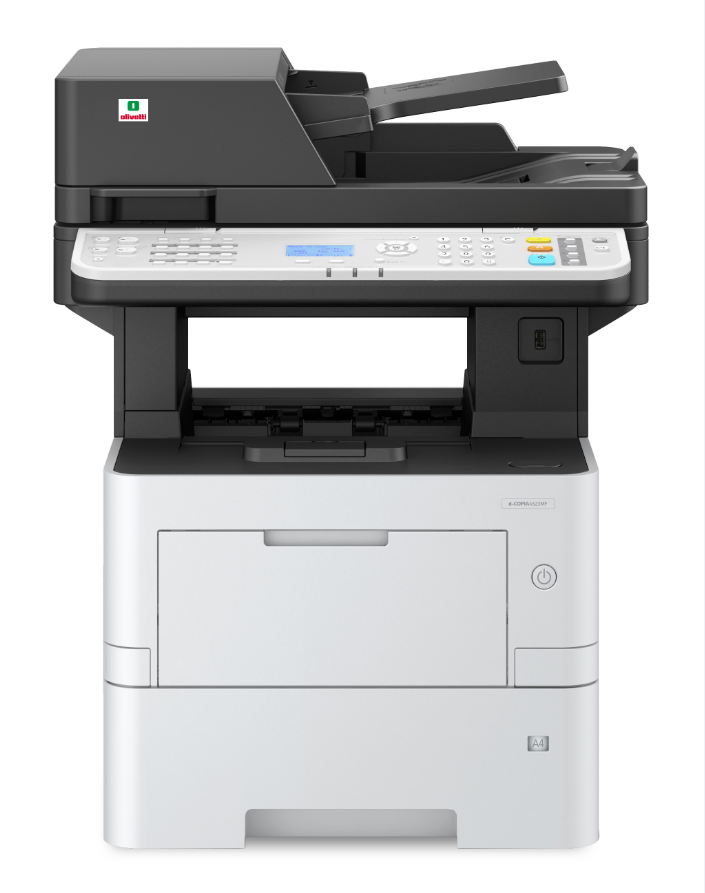

Fotocopiatrici e multifunzioni a Siracusa
Vendita, noleggio e assistenza di fotocopiatrici professionali, stampanti multifunzione e sistemi di stampa per Siracusa e provincia.
Vendita e noleggio fotocopiatrici per uffici e aziende
Vendita, fornitura e noleggio di sistemi multifunzione per stampa, copia e scansione, con soluzioni adatte alle esigenze operative di ogni ambiente di lavoro.
Scopri i vantaggi del noleggio
Il noleggio di fotocopiatrici e multifunzioni è una scelta strategica per molte aziende: riduce l’investimento iniziale, rende i costi più prevedibili e consente di avere assistenza tecnica e soluzioni sempre aggiornate.
- Canone periodico chiaro e programmabile
- Assistenza tecnica dedicata e supporto operativo
- Consumabili e aggiornamenti gestiti in modo più semplice

Se cerchi fotocopiatrici a Siracusa, DUEMME S.r.l. propone soluzioni di vendita, fornitura e noleggio di apparecchiature per la stampa, la copia e la scansione. Valutiamo insieme le esigenze di uffici, studi professionali, imprese, attività commerciali, scuole ed enti pubblici.
Per chi cerca multifunzioni a Siracusa e provincia, possiamo fornire informazioni su modelli, formule di noleggio, materiali di consumo e assistenza tecnica. La scelta viene definita in base alle necessità operative e alla disponibilità dei prodotti.
Esplora una multifunzione Olivetti
Seleziona una funzione o tocca i punti sull'immagine per scoprirne le caratteristiche.

Acquisizione e digitalizzazione dei documenti per il lavoro d'ufficio.
Anteprima dimostrativa con rotazione simulata; non è un modello 3D reale.
Vai al catalogo completo ↓Modelli Olivetti per formato e colore
Scegli una categoria e apri la scheda del modello per conoscere le opzioni disponibili e richiedere un preventivo. Le fotografie e le caratteristiche tecniche saranno aggiunte progressivamente.
I modelli sono elencati a fini informativi. Immagini, caratteristiche, disponibilità e condizioni commerciali verranno confermate per ogni richiesta.
Valutiamo richieste anche da Augusta, Noto, Avola, Floridia e Priolo Gargallo, oltre che da Siracusa.
Richiedi informazioni
Contattaci per approfondire disponibilità, soluzioni e modalità di fornitura o assistenza.
Richiedi preventivo →